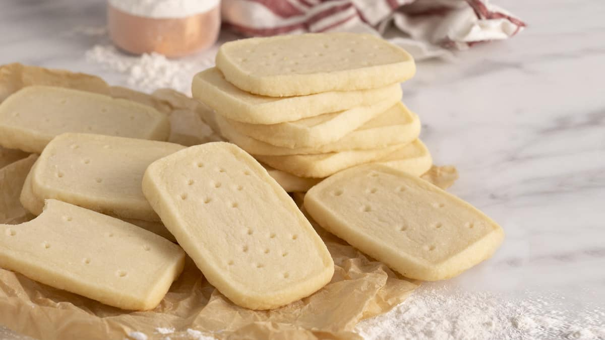

Recipe for Shortbread Cookies

Easy recipe for delicious cookies.
Ingredients
- 1/4 cup white sugar
- 1/2 cup unsalted butter
- 1 cup all-purpose flour
- 1/3 cup white rice flour
Directions
- Preheat oven to 325 degrees F.
- Line baking sheet with greaseproof paper. Sift flour and rice flour into medium mixing bowl. Add the sugar and mix.
- Cut butter into pieces and rub into flour with fingers. Knead into soft dough.
- Roll dough into an 8 inch round. Place on baking sheet. Using a fork, prick top and make tine marks along edge. Using a knife, score top with wedge marks.
- Bake 45 minutes. Sprinkle superfine sugar over top and let cool. Cut into wedges. Keep for weeks in airtight tin.